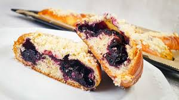

Jagodzianki

Jagodzianka is a Polish variety of a sweet bread roll with berry filling. It is often topped with streusel.Jagodzianki are traditional Polish sweet buns filled with fresh blueberries. These buns are made with a soft yeast dough that is lightly sweetened, creating a perfect balance with the tartness of the blueberries. Jagodzianki are popular in Poland, especially during the summer when blueberries are in season. They are often enjoyed as a sweet breakfast, a snack, or a dessert, and are a beloved treat that brings back fond memories of Polish childhoods.
Shopping list
- Half a cup of milk
- 2 spoons of sugar
- Yeast
- Spoonful of flour
- Butter
- 2 egg yolks
- Cup of flour
- Blueberries
 Prep Time
Prep Time Cook Time
Cook Time